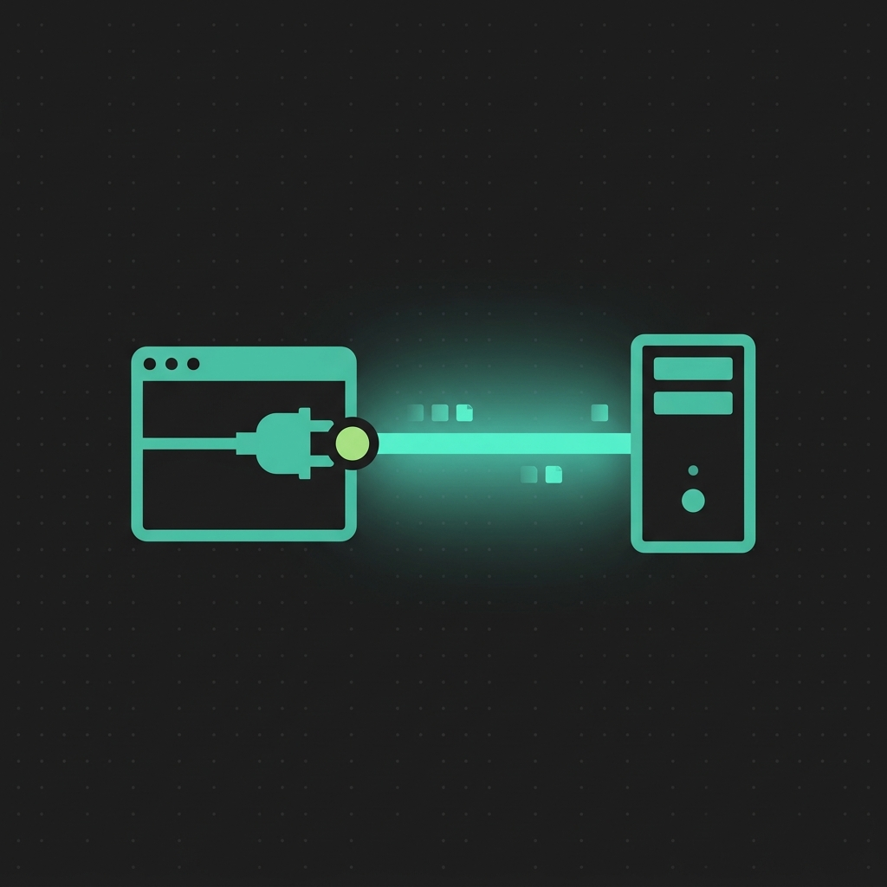

Filesystem
Read, write, patch, search, move, and inspect files inside boundaries you define. Nothing outside allowed paths.
read_file project/README.md → 2.1 KB
patch_file config.json @@ -4 lines
grep "TODO" src/ → 11 hitsOne endpoint. 97 scoped tools. Local approval. Claude, ChatGPT and Cursor command your PC — nothing runs you didn't allow.
Pick single capabilities or compose operator workflows. Every request still crosses authentication, scopes, path policy, and optional local approval.
Read, write, patch, search, move, and inspect files inside boundaries you define. Nothing outside allowed paths.
read_file project/README.md → 2.1 KB
patch_file config.json @@ -4 lines
grep "TODO" src/ → 11 hitsApproved commands, background work, process inspection.
$ run_command
$ list_processes
$ get_envCapture displays, read visible text, drive mouse and keyboard.
Call HTTP services, inspect connections, expose local ports.
Hardware, disks, battery, apps, clipboard, notifications.
Persistent task context plus full repository operations.
No hidden desktop session. The client speaks MCP, policy decides, Windows returns a structured result.
Connect a client
Add the endpoint and bearer key to Claude, ChatGPT, Cursor, or any MCP client.
"url": "https://mcp.solisk.org/mcp/workspace-id"The client opens an MCP session and lists the tools you enabled — nothing more.
tools/list → read_file, run_command, …The model picks a tool and sends typed arguments. The runtime checks key scope, paths, and approval mode.
{ "name": "read_file", "arguments": { "path": "README.md" } }Allowed calls run and return JSON-RPC results. Denied or unapproved calls return an error — nothing executes.
Managed relay, your own relay, or pure loopback. Execution stays on your machine in every mode.
PC access is dangerous when authority is vague. Credentials, scopes, boundaries, and approval mode stay visible.
Read security modelMIT-licensed core: local runtime, relay, scopes, and self-hosting. The full source is public on GitHub today, with builds and docs in every release.
desktop-app/ Windows control surface
relay-server/ WebSocket + MCP relay
tools/ 97 local capabilities
lib/ security and transport
SECURITY.md threat boundaries
LICENSE MITNo. The runtime executes on your machine; the relay only transports authenticated requests. Local-only mode is pure loopback traffic.
Only what you enable. Scoped keys limit tool categories, allowed paths bound the filesystem, and Ask mode confirms sensitive actions locally first.
Any MCP client — Claude connectors, ChatGPT, Cursor, local HTTP. One URL plus a bearer key. Setup guide.
No. Keys generate on your machine during onboarding and stay there. Devices identify by room code, not identity.
The installer is unsigned, so SmartScreen flags it. Install only the official build from GitHub and verify the checksum.
Core is MIT-licensed; the hosted relay is free during beta. Self-hosting is always available.